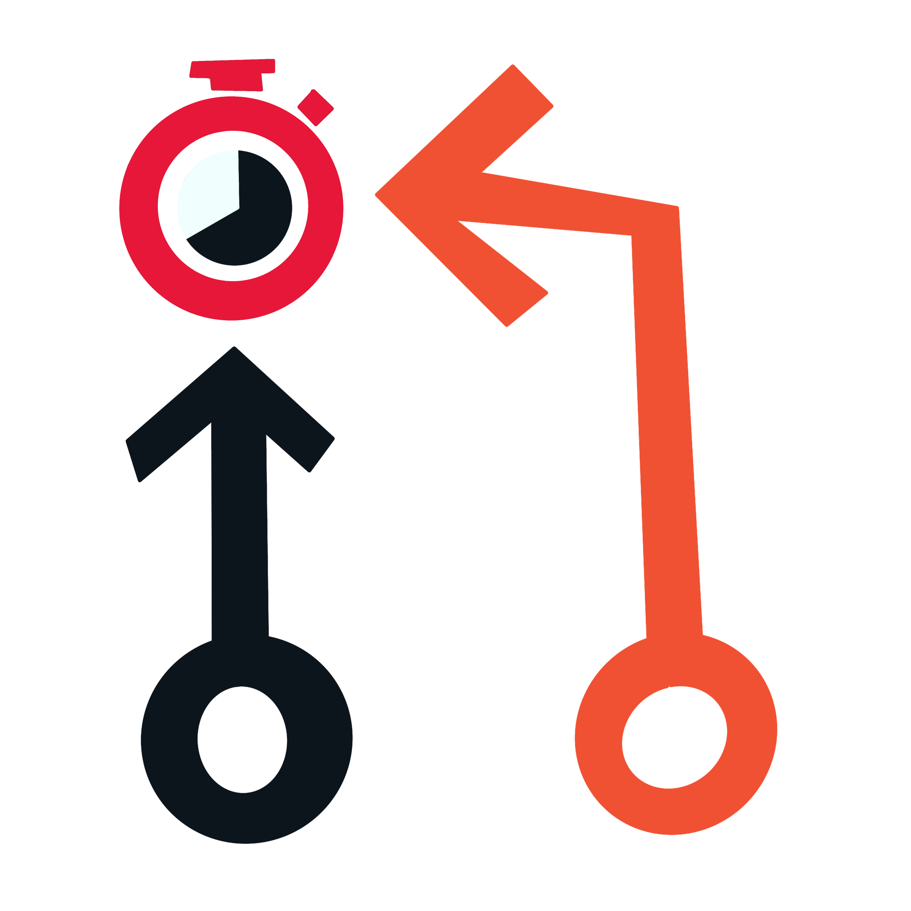

A Thai-language channel built on one honest premise: a regular person chasing an extraordinary goal. I am starting genuinely below average and working toward a full Ironman.
Not a fitness influencer performing a struggle. I am starting below average, with a real injury history and more than a decade out of the pool, and working toward finishing a full Ironman. The relatability is the whole hook — if I were already fast there would be nothing here worth watching.
A staged progression over roughly four years: sprint, then Olympic, then 70.3, then the full distance. Doing it in stages is the point. Each one is a real race with a real result, rather than four years of training footage leading to a single day that either works or does not.
My background is road cycling — I ride a BMC Teammachine — plus running, football as a goalkeeper, and table tennis. The bike leg is the part I am least worried about. Swimming is the genuine weakness and the biggest hurdle, which is exactly why it sits at the centre of the story rather than being quietly edited out.
Partway through, the training moves with me: from London, fitting sessions around an MSc at Imperial, to Bangkok and the heat. Same plan, an entirely different problem.
A computer science and FinTech background means I approach this the way I would approach any other problem with data in it: tracking the metrics, running self-experiments, and questioning conventional training wisdom rather than repeating it.
Most triathlon channels are either pure vlog or pure coaching. Nobody is taking the data-driven beginner angle seriously, and almost nobody is doing it in Thai.
The name went through a deliberately unnecessarily long process across two broad approaches: personal-brand names, and concept names.
PR carries a genuine double meaning: pull request to a CS audience, personal record to a triathlete. Pending carries the work-in-progress narrative either way — nothing has been achieved yet, and that is the honest tense for a channel that starts before the result. That dual reading was the entire point, so it survived every round.
PR does collide with other things. Public relations most obviously, especially in a business context, and at a stretch purchase request or even Puerto Rico. I floated a PB variant to sidestep it — personal best is strong in UK running culture — but PB drops the CS layer entirely, invites its own confusion with peanut butter, and loses the exact double meaning that made the concept work in the first place.
The conclusion was that the overlap is a non-issue for the audience this is actually for. Nobody searching triathlon or CS content reads PR as public relations. The payoff was worth keeping.
That left formatting. Across YouTube, Instagram and TikTok the
underscore is the only separator that works everywhere, which ruled
out spaces and hyphens. Rather than flat snake_case, it settled on
pol_prPending: snake_case separating the subject
(pol) from a camelCase compound attribute
(prPending), styling the whole handle as a programming
variable. It reads as code, works as a username everywhere, and
carries all three layers at once.
The logo builds on the pull-request icon: two nodes — where I am now, and the Ironman finish — joined by a branching arrow for the journey between them.
One to two posts a week, alternating the main journey with a supporting series, and short-form filling the gaps. The naming is deliberate: every series is styled as code — snake_case, dot notation, camelCase — to carry the same CS identity as the channel name.
Every session lands as a .fit file, which runs through a
pandas pipeline into the charts that end up in the videos. Which is
the plan anyways.
Building the Django dashboard that holds all of this is itself a recurring series — the training plan and the software get built in parallel. Also, a plan... pending.